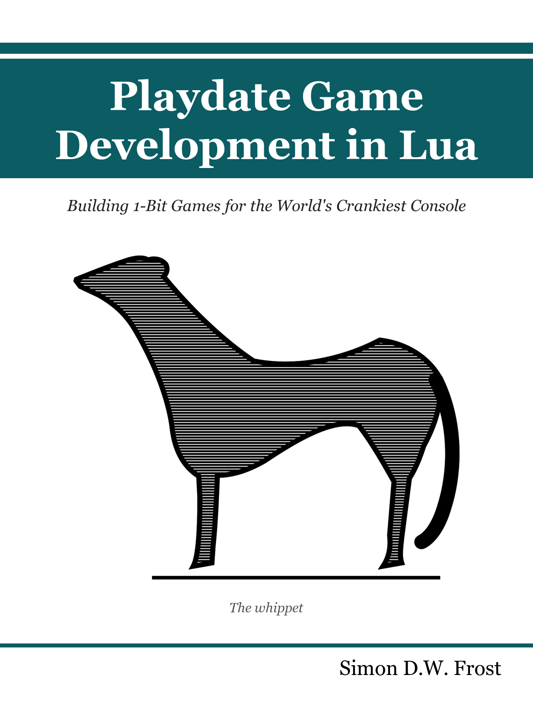

Playdate Game Development in Lua
Building 1-Bit Games for the World’s Crankiest Console
Preface

This book teaches you to build games for the Playdate — Panic’s pocket-sized console with a 400x240 1-bit screen, a d-pad, two buttons, and a hand crank — using the Lua SDK. It is a book about a small machine, written in the belief that small machines are where game programming is most fun: every constraint on this hardware — one bit of color, a screen that tops out at 50 Hz (most games settle on the recommended 30), a microcontroller’s worth of CPU — turns out to be a design prompt rather than a limitation, and the crank alone has produced more original input ideas than a decade of extra buttons.
Who this book is for
You are a competent programmer. You can read code in a language you have not used before and see what it does; you know what a game loop is, even if you have never written one. You have never touched a Playdate. That is the whole prerequisite list. Lua itself gets a sixty-second orientation in 2 Lua the Playdate Way and is gentle enough to absorb from the listings; the Playdate-specific parts — and there are more of them than you might expect, starting with a module system that shares one global environment across every file — are the book’s job to teach.
If you have shipped Playdate games, the book still has things to say to you: a full treatment of the SDK systems most working codebases skip (sprites, timers, the pathfinder), and a testing method — scripted input, headless Simulator runs, autopilots that play the whole game — that most Playdate developers have never seen applied to this platform.
Why the Playdate
The Playdate is a fixed target: one screen, one CPU, one set of controls, for every player in the world. There is no resolution detection, no graphics-settings screen, no device matrix. You write a game; everyone plays that game. The screen is a razor-sharp memory LCD where every pixel is black or white — grays are an illusion you will learn to manufacture from dither patterns in 4 Drawing in One Bit — and art made of two colors is fast to produce, readable at arm’s length, and impossible to over-produce. The machine is honest about its budget (33 milliseconds a frame at the recommended 30 fps, 19 Performance and the Device) and rewards discipline rather than horsepower.
And then there is the crank: a fold-out handle that reports its absolute angle, spins freely in both directions, and has no equivalent on any other console. Games that use it well feel like they could not exist anywhere else. It gets a chapter of its own (10 The Crank), with a catalog of mappings proven across shipped games.
Constraints breed creativity. That is the sales pitch for the whole console, and it is also the pedagogical bet of this book: on a machine this small, you can hold the entire stack in your head — every pixel, every millisecond, every byte of save data — and that is how game programming is best learned.
How the book is organized
Seven parts, twenty-six chapters, five appendices:
- Part I, Getting Started takes you from an empty directory to a running program, then teaches the dialect of Lua this platform actually speaks and the update-loop-plus-mode-machine skeleton that every later example is built on.
- Part II, Graphics covers the 1-bit screen from primitives and dither patterns through images, fonts, the sprite system, cameras for worlds bigger than the screen, and wireframe fake-3D.
- Part III, Input works through the buttons, the crank, and the accelerometer — plus the system menu, pause screen, and the other UI the OS expects you to respect.
- Part IV, Sound builds effects from raw synthesizers and music from sequences and step clocks, with no audio files in sight.
- Part V, Building Games assembles the game-shaped parts: movement and collision, game feel, enemies and pathfinding, and saving.
- Part VI, Shipping is the payoff: testing your game without touching it, making it fast on real hardware, and packaging a finished, polished pdx for other people’s devices.
- Part VII, Inside the Engines is the long look back. Six of the book’s case-study packages are not single games but engines with fleets of games on top, and each gets a chapter that reads it end to end: Phosphor’s vectors, Tiles’ grid, Voxel’s volume, Dither’s shade, Lore’s story systems, and Shmup’s frame of reference. Every one of these chapters vendors the real, shipped engine into its runnable example, so what you read is what runs — and the six together are a study in the one decision that matters most: deciding what your engine is about. Five of them answer it with a representation; the sixth answers it with a question about what is standing still.
The appendices are references: Playdate Lua versus standard Lua, a map of the full SDK by namespace, environment setup (including the unattended-Simulator configuration the book’s own tooling depends on), the book’s test-and-figure harness documented for reuse, and a catalog of the shipped games quoted throughout.
How the examples work
Every chapter has a companion example: a real, buildable Playdate project living in examples/NN-slug/ alongside the book’s source. Each one compiles with the SDK’s pdc, runs in the Simulator, runs on a device, and is small enough to read in one sitting. To play any of them:
make -C examples/03-modes runThat builds a clean pdx and opens it in the Simulator. The examples are not illustrative fragments — they are the source of truth for the book’s listings, which are extracted from the example sources at render time and therefore cannot drift from the code that actually ships.
The figures go one step further. Every screenshot in this book was captured automatically, by scripting the example with synthetic input from a fixed random seed and photographing named frames of the run. When a caption says “frame 200 of a deterministic run,” that is a literal description of how the PNG was made — rebuild the book and the same pixels come back. Reproducibility is a feature here, not a flourish: the capture pipeline doubles as a smoke test (a crashing example fails the build before it can produce a stale figure), and by 18 Testing Without Touching It you will have learned to build the same machinery for your own games. The scaffolding that makes this work rides along in every example as two small files, shots.lua and bookharness.lua, introduced honestly in 1 Hello, Playdate and documented in full in Appendix D — The Book Harness Reference.
What you need
- A computer. macOS, Windows, or Linux — the SDK supports all three. This book’s examples and tooling were built on macOS; the handful of macOS-specific details are flagged as such.
- The Playdate SDK, a free download from Panic. It includes the compiler, the Simulator, the libraries, and the API reference. This book was written against SDK 3.0.6. Appendix C — Environment Setup covers installation end to end.
- A Playdate — optional. The Simulator is a faithful development rig and everything in this book can be done without hardware. But the Simulator runs on a desktop CPU that is enormously faster than the device, so before you ship, you want real hardware in your hands (19 Performance and the Device returns to this, with numbers).
Where the patterns come from
The advice in this book is not speculative. It is distilled from more than sixty shipped Playdate games by the author — sixteen vector arcade games on one line-drawing library, tile-engine platformers, a voxel engine, a shade engine, an RPG engine, a 28-room metroidvania, rhythm games, fighting games, and a bestiary of small animal-shaped originals — all built in Lua, on one consistent house style, with a shared testing discipline. When a chapter recommends a pattern, the recommendation usually arrives with a scar: the game where the alternative was tried, what broke, and what the pattern fixed. The games themselves appear throughout as case-study sidebars, and Appendix E — The Case-Study Games catalogs them; the source for most is public at github.com/plaidate.
Conventions
- Code listings carry a filename chip showing which example source file they were extracted from. If a listing has no filename, it is either a deliberate anti-pattern (the prose will say so) or a quote from a shipped game.
- Quotes from the shipped games carry their origin as a first-line comment,
-- repo/path/file.lua:line, so every claim about “how the real games do it” is checkable against real code. - Callout boxes mark the traps (warnings) and the asides (notes). The warnings are all load-bearing; each one cost somebody an afternoon.
- API names are verified against the SDK 3.0.6 reference, Inside Playdate — which ships with the SDK and remains the authority on every optional argument this book does not spell out.
Acknowledgments
Panic’s Inside Playdate documentation deserves particular thanks: it is that rare platform reference that is accurate, complete, and a pleasure to read, and this book leans on it throughout. Thanks also to the Playdate community, whose collective curiosity about what a crank is for keeps this platform delightful — and to Archer, the whippet on the cover, who insisted.
License
The text and figures of this book are licensed under Creative Commons Attribution 4.0 (CC BY 4.0); the example projects, tooling, and every code listing are under the MIT License. Playdate is a registered trademark of Panic Inc.; this book is not affiliated with or endorsed by Panic.